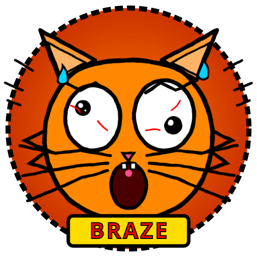
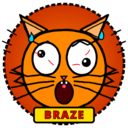

0
Rastreadores Bloqueados
+4.920 calorosamente convidados
18.4 GB
Anúncios Injetados
100% de ocupação do ecrã
3h 42m 00s
Tempo Desperdiçado
Com pop-ups do visitante nº 1.000.000
420.69 DOGE
Minerado para Hacker
CPU Fan: 99.8% (Quase a voar)
Nova versão do Braze disponível!
Descarregar

BRAZE
12:00
IT
ITIS Copernico
PT
MS Paint Web
DG
Dogechain
RM
Descarregar RAM
SB
Servidor Sibéria
FN
Reparar Ventoinha